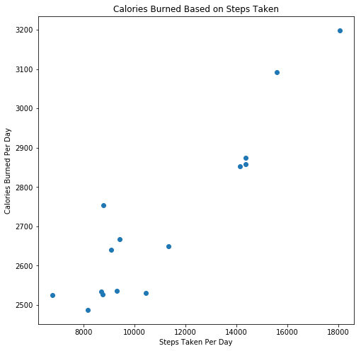
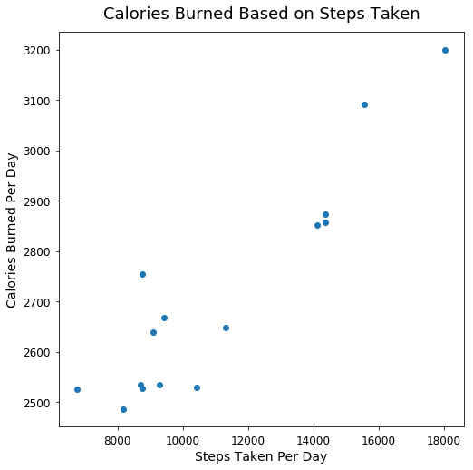
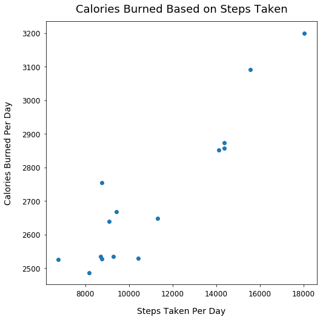
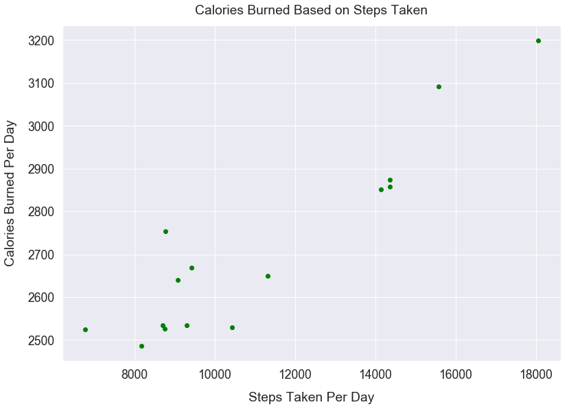

Style Plots using Matplotlib
- Mar 4 • 6 min read
- Key Terms: scatter plot
In this post, I'll walk through several small changes to style your plots in Matplotlib such as:
- Add a title
- Add X and Y axis labels
- Adjust the figure size
- Adjust individual font sizes of plot elements
- Adjust padding between the title and plot
- Adjust padding between tick values and the plot
- Adjust padding between axes labels and tick values
- Adjust the color of scatter points
- Adjust all font sizes in a simple line
- Make scatter points larger
Import Modules
import matplotlib.pyplot as plt
import seaborn as sns
% matplotlib inline
Fitbit Activity Data
Below is my Fitbit data of daily steps taken and daily calories burned over a 15-day period.
calories_burned = [3092, 2754, 2852, 2527, 3199, 2640, 2874, 2649,
2525, 2858, 2530, 2535, 2487, 2534, 2668]
steps = [15578, 8769, 14133, 8757, 18045, 9087, 14367, 11326, 6776,
14359, 10428, 9296, 8177, 8705, 9426]
Our Initial Plot with Default Styles
plt.scatter(steps, calories_burned);

There's a lot we can improve to make this plot more appealing.
Add a Title
Call the title method and pass in a string value for our title name.
plt.scatter(steps, calories_burned)
plt.title("Calories Burned Based on Steps Taken");

Add X and Y Axis Labels
Call the xlabel method and pass in a string value for the label name on the x-axis.
Call the ylabel method and pass in a string value for the label name on the y-axis.
plt.scatter(steps, calories_burned)
plt.title("Calories Burned Based on Steps Taken")
plt.xlabel("Steps Taken Per Day")
plt.ylabel("Calories Burned Per Day");

Adjust the Figure Size
Call the figure method and for the figsize argument, pass in a tuple of (width, height).
plt.figure(figsize=(8, 8))
plt.scatter(steps, calories_burned)
plt.title("Calories Burned Based on Steps Taken")
plt.xlabel("Steps Taken Per Day")
plt.ylabel("Calories Burned Per Day");

Adjust Individual Font Sizes
For the methods title, xlabel, ylabel, include a numeric value for fontsize argument to change the font size.
Call the tick_params method and for the labelsize argument, pass in a numeric value to change the font size of the tick values.
Generally, tick values have smaller fonts than axes labels.
plt.figure(figsize=(8, 8))
plt.scatter(steps, calories_burned)
plt.title("Calories Burned Based on Steps Taken", fontsize=18)
plt.xlabel("Steps Taken Per Day", fontsize=14)
plt.ylabel("Calories Burned Per Day", fontsize=14)
plt.tick_params(labelsize=12);

Adjust the Padding Between the Title and Plot
Include the argument y in the title method and pass in a numeric value.
1.0 is the default value; so 1.02 adds a litle bit of additional padding.
plt.figure(figsize=(8, 8))
plt.scatter(steps, calories_burned)
plt.title("Calories Burned Based on Steps Taken", fontsize=18, y=1.02)
plt.xlabel("Steps Taken Per Day", fontsize=14)
plt.ylabel("Calories Burned Per Day", fontsize=14)
plt.tick_params(labelsize=12);

Adjust Padding Between Tick Values and the Plot
In the tick_params method, for the argument pad, pass in a numeric value, being the pixel size betwen the tick values and the plot.
plt.figure(figsize=(8, 8))
plt.scatter(steps, calories_burned)
plt.title("Calories Burned Based on Steps Taken", fontsize=18, y=1.02)
plt.xlabel("Steps Taken Per Day", fontsize=14)
plt.ylabel("Calories Burned Per Day", fontsize=14)
plt.tick_params(labelsize=12, pad=6);

Add Padding Between Axes Labels and Tick Values
In the xlabel and ylabel methods, include the argument labelpad and include a numeric value to add more padding.
plt.figure(figsize=(8, 8))
plt.scatter(steps, calories_burned)
plt.title("Calories Burned Based on Steps Taken", fontsize=18, y=1.02)
plt.xlabel("Steps Taken Per Day", fontsize=14, labelpad=15)
plt.ylabel("Calories Burned Per Day", fontsize=14, labelpad=15)
plt.tick_params(labelsize=12, pad=6);

Adjust the Color of our Scatter Points
In the scatter method, pass the value green to the c argument that specifies the color of our scatter points.
plt.figure(figsize=(8, 8))
plt.scatter(steps, calories_burned, c='green')
plt.title("Calories Burned Based on Steps Taken", fontsize=18, y=1.02)
plt.xlabel("Steps Taken Per Day", fontsize=14, labelpad=15)
plt.ylabel("Calories Burned Per Day", fontsize=14, labelpad=15)
plt.tick_params(labelsize=12, pad=6);

Make Font Sizes and Plot Much Larger
Often times, the default size of plots and text in Matplotlib make it difficult to read. We can easily change all that with just 2 lines of code.
In the first line below, we declare sns.set(font_scale=1.6). Note, this uses the Seaborn visualization library, which is a wrapper on top of Matplotlib. These libraries work well together. This method call changes the background to be a light gray and adds a white grid. Also, this call scales all the fonts to be 1.6x greater than the default. I removed our previous individual font size calls for elements too.
Since most other elements are larger, I also made the figure size larger.
sns.set(font_scale=1.6)
plt.figure(figsize=(13, 9))
plt.scatter(steps, calories_burned, c='green')
plt.title("Calories Burned Based on Steps Taken", y=1.02)
plt.xlabel("Steps Taken Per Day", labelpad=15)
plt.ylabel("Calories Burned Per Day", labelpad=15)
plt.tick_params(pad=6);

Make Scatter Points Larger
Above, the size of the scatter points are very small. Let's make them larger so they're easier to spot on this large plot.
In the scatter method, pass the value 65 to the s argument that specifies the size of our scatter points.
sns.set(font_scale=1.6)
plt.figure(figsize=(13, 9))
plt.scatter(steps, calories_burned, c='green', s=65)
plt.title("Calories Burned Based on Steps Taken", y=1.02)
plt.xlabel("Steps Taken Per Day", labelpad=15)
plt.ylabel("Calories Burned Per Day", labelpad=15)
plt.tick_params(pad=6);